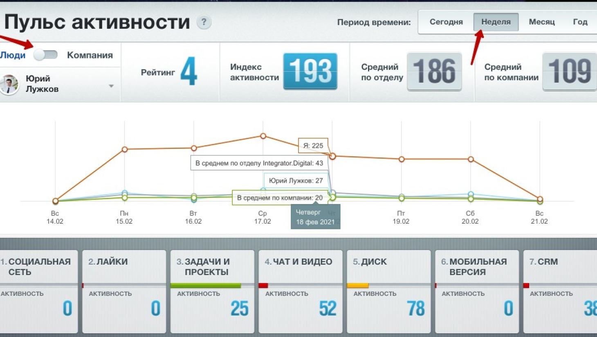

Пульс компании - обзор инструмента
Корпоративный портал Битрикс24 имеет в своем распоряжении огромное количество инструментов, нацеленных на повышение эффективности работы предприятия. Они направлены на автоматизацию рутинных бизнес-процессов, построение отчетности, контроль за выполнением задач и многое другое. Именно грамотное использование всех возможностей системы делает Битрикс24 такой универсальной и мощной платформой для сопровождения любого бизнеса.
Задача руководителя состоит не только в том, чтобы предоставить в распоряжение сотрудников весь необходимый функционал, но и донести до них важность работы с ним. Нередки случаи, когда переход на новую платформу дается персоналу тяжело и он по старинке продолжает использовать привычные методы работы, не задействуя весь потенциал инструментов Битрикс24. Часть работы он ведет на платформе, а часть — нет.
Такое положение дел вредит как самому сотруднику, так и всей компании, поэтому нужно принимать меры: вести разъяснительную работу, проводить повторное обучение, повышать мотивацию. Но в самом начале требуется оценить эффективность использования инструментов в компании — выявить те, которые игнорируются чаще всего, а также оценить вовлеченность каждого из сотрудников.
Как это устроено
Пульс компании — инструмент, позволяющий контролировать, насколько полно используется сотрудниками функционал корпоративного портала. Он может отображать как общие показатели активности, так и индивидуальные по каждому сотруднику. Для расчета используются специальные показатели:
- Рейтинг
- Активность
- Вовлеченность
Каждый показатель можно рассчитать по нескольким параметрам, в зависимости от отрезка времени, инструмента и пользователя.
Рейтинг — отличный инструмент для повышения мотивации сотрудников использовать все возможности Битрикс24. Он рассчитывается на основе индивидуальной активности каждого служащего. Проще говоря — показывает с амых активных пользователей системы. Кроме этого, этот показатель можно отсортировать по каждому инструменту отдельно. Для того, чтобы сотрудник попал в рейтинг по инструменту, он должен использовать его 3 и более раз.
Активность — этот показатель определяет насколько активно используются те или иные инструменты. На его основе можно понять, какие именно инструменты используются чаще, а какие игнорируются.
Вовлеченность — один из важнейших индикаторов, показывающий насколько полно персонал использует возможности портала. В него попадают все сотрудники, использующие 4 или более инструментов, представленных в «Пульс компании». Все служащие, использующие менее 4 инструментов, попадают во вкладку «Не вовлечены». Оценку вовлеченности можно выполнить за определенный период: сегодня, неделю, месяц или год.
Информация, собранная инструментом, подается 2 способами: виджет и пульс. Виджет может отображать только общую статистику по всей компании: активность и вовлеченность. При этом будут выводиться данные, собранные за последний час, а для получения актуальной информации нужно обновить страницу. Для того, чтобы получить полноценную информацию, необходимо нажать на виджет — откроется окно Пульс компании.
Как пользоваться инструментом
В главном окне представлены основные данные, которые можно настроить по своему усмотрению. Например, программа умеет отображать информацию по компании и по конкретному сотруднику. Для этого в левом верхнему углу предусмотрен переключатель «Люди\Компания». Чтобы посмотреть данные по определенному служащему, необходимо перевести переключатель в положение «Люди» и найти сотрудника в поиске, или выбрать его, используя структуру предприятия. Программа отобразит график, состоящий из 4 параметров: график сотрудника, ваш график, график компании и график отдела, к которому приписан сотрудник.
Краткие итоги
Хороший руководитель старается обеспечить своих подчиненных самыми прогрессивными инструментами, помогающими вести бизнес. Современные методы — залог успеха в любом деле, особенно таком сложном, как предпринимательство в различных сферах: производство, логистика, различные услуги, продажи. Но многие забывают о том, что инструменты полезны только тогда, когда они используются. Сам факт их присутствия никак не влияет на результат и успех.
Пульс компании помогает оценить то, насколько полно используются инструменты платформы Битрикс24, а значит и пользу от их внедрения. Для руководителя это полезный инструмент оценки вовлеченности сотрудников, а для самих сотрудников может служить хорошей мотивацией более активно использовать возможности площадки. Когда служащий наглядно видит, что он отстает от коллег, или, наоборот, занимает лидирующее место — это хороший стимул повысить свою вовлеченность. Особенно, если он знает, что это же самое видит его начальник.
Другие материалы по теме:
Нажимая кнопку "Заказать", я даю свое согласие на обработку моих персональных данных, в соответствии с Федеральным законом от 27.07.2006 года №152-Ф3 "О персональных данных", на условиях и для целей, определенных в Согласии на обработку персональных данных.